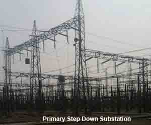
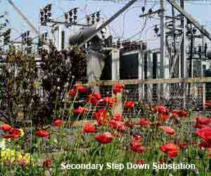
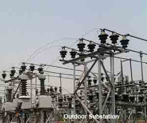

Step Up Substation
Step Down Substation
Primary Step Down Substation
Secondary Step Down Substation
Distribution Substation
Bulk Supply or Industrial Substation
Mining Substation
Mobile Substation
Outdoor Type Substation
Indoor Substation
Underground Substation
Pole Mounted Substation
Electrical Substation
Now days the electrical power demand is increasing very rapidly. For fulfilling these huge power demands the modern time requires creation of bigger and bigger power generating stations. These power generating stations may be hydro – electric, thermal or atomic. Depending upon the availability of resources these stations are constructed different places. These places may not be nearer to load centers where the actual consumption of power takes place. So it is necessary to transmit these huge power blocks from generating station to their load centers. Long and high voltage transmission networks are needed for this purpose. Power is generated comparatively in low voltage level. It is economical to transmit power at high voltage level. Distribution of electrical power is done at lower voltage levels as specified by consumers. For maintaining these voltage levels and for providing greater stability a number of transformation and switching stations have to be created in between generating station and consumer ends. These transformation and switching stations are generally known as electrical substations. Depending upon the purposes, the substations may be classified as-
Step Up Substation
Step up substations are associated with generating stations. Generation of power is limited to low voltage levels due to limitations of the rotating alternators. These generating voltages must be stepped up for economical transmission of power over long distance. So there must be a step up substation associated with generating station.
Step Down Substation
The stepped up voltages must be stepped down at load centers, to different voltage levels for different purposes. Depending upon these purposes the step down substation are further categorized in different sub categories. 
Primary Step Down Substation
The primary step down sub stations are created nearer to load center along the primary transmission lines. Here primary transmission voltages are stepped down to different suitable voltages for secondary transmission purpose.
Secondary Step Down Substation

Along the secondary transmission lines, at load center, the secondary transmission voltages are further stepped down for primary distribution purpose. The stepping down of secondary transmission voltages to primary distribution levels are done at secondary step down substation.
Distribution Substation
Distribution substation are situated where the primary distribution voltages are stepped down to supply voltages for feeding the actual consumers through a distribution network.
Bulk Supply or Industrial Substation
Bulk supply or industrial substation are generally a distribution sub – station but they are dedicated for one consumer only. An industrial consumer of large or medium supply group may be designated as bulk supply consumer. Individual step down substation is dedicated to these consumers.
Mining Substation
The mining substation are very special type of substation and they need special design construction because of extra precautions for safety needed in the operation of electric supply.
Mobile Substation
The mobile substations are also very special purpose sub – station temporarily required for construction purpose. For big construction purpose this substation fulfills the temporary power requirement during construction work.
Depending upon the constructional feature categories of sub – station may be divided into following manner-
Outdoor Type Substation

Outdoor type substation are constructed in open air. Nearly all 132KV, 220KV, 400KV substation are outdoor type substation. Although now days special GIS (Gas insulated substation) are constructed for extra high voltage system which are generally situated under roof.
Indoor Substation
The substations are constructed under roof is called indoor type substation. Generally 11KV and sometime 33KV substation are of this type.
Underground Substation
The substation are situated at underground is called underground substation. In congested places where place for constructing distribution substation is difficult to find out, one can go for underground sub – station scheme.
Pole Mounted Substation
Pole mounted substation are mainly distribution substation constructed on two pole, four pole and sometime six or more poles structures. In these type of substation fuse protected distribution transformer are mounted on poles along with electrical isolator switches.
 by
by